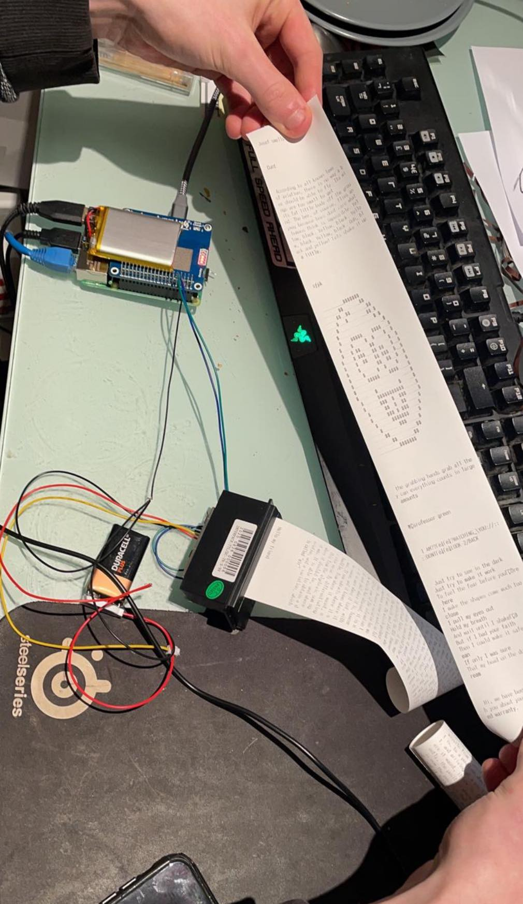
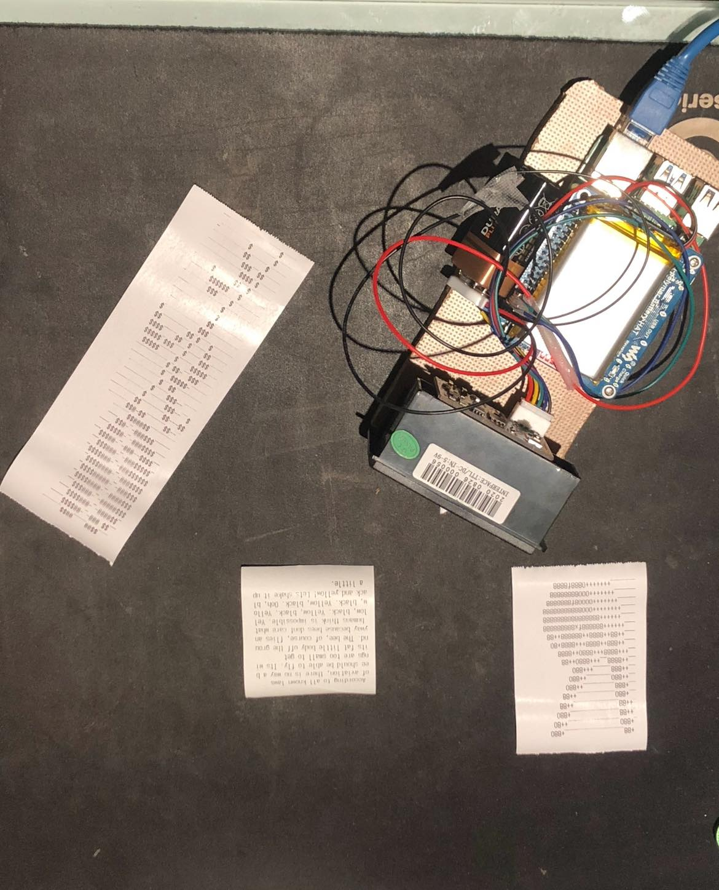
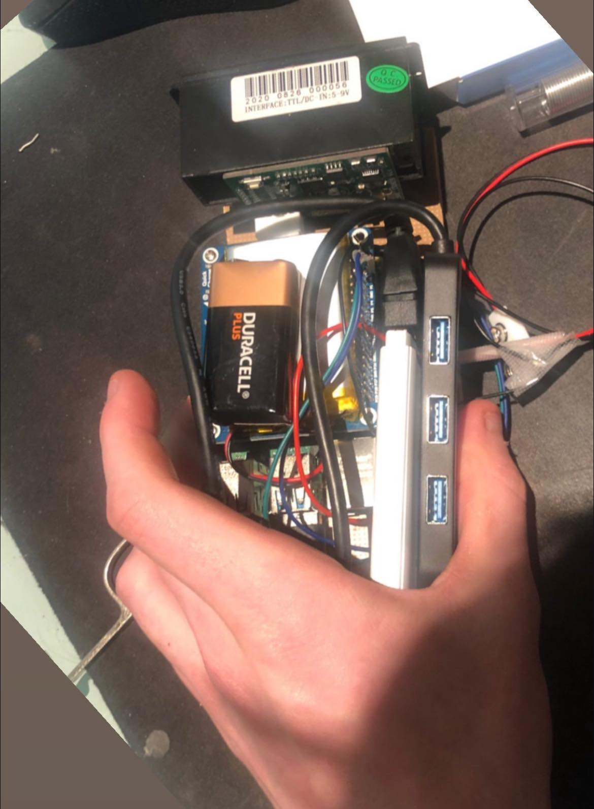

Portable fax machine
Obviously this is not technically speaking a portable fax machine in almost any way but that is where the concept began. I became frustrated having my phone on me at all times because I felt like i was becoming addicted to social media and the constant advertisement and dopamine burn out was frying my brain, I conceived of this device, that would simply receive a message and print it out using a receipt printer, thus removing any need to look at a screen but still receiving a message from friends.

After combining a Raspberry Pi with a receipt printer and a battery hat, I connected it to the internet through an ethernet cable to test it, I ran it through a web API called Ngrok which allowed me to receive SMS messages to a node.js server i was running on the Pi and then print the message. I wrote a program which translated images into Ascii text and printed them as you can see.

The final step was to use a 3G dongle for the internet connection to be wireless anywhere with a signal, and to mount all the parts to a small base. The package is obviously cumbersome and not practical, but serves as a fun proof of concept as to what this type of communication could be.

Having the physical receipts of the conversation is also a nice sort of semi physical medium, and the printing of the messages is very exciting and novel. I think it's unlikely to catch on but a cute idea to send printed messages to loved ones perhaps.